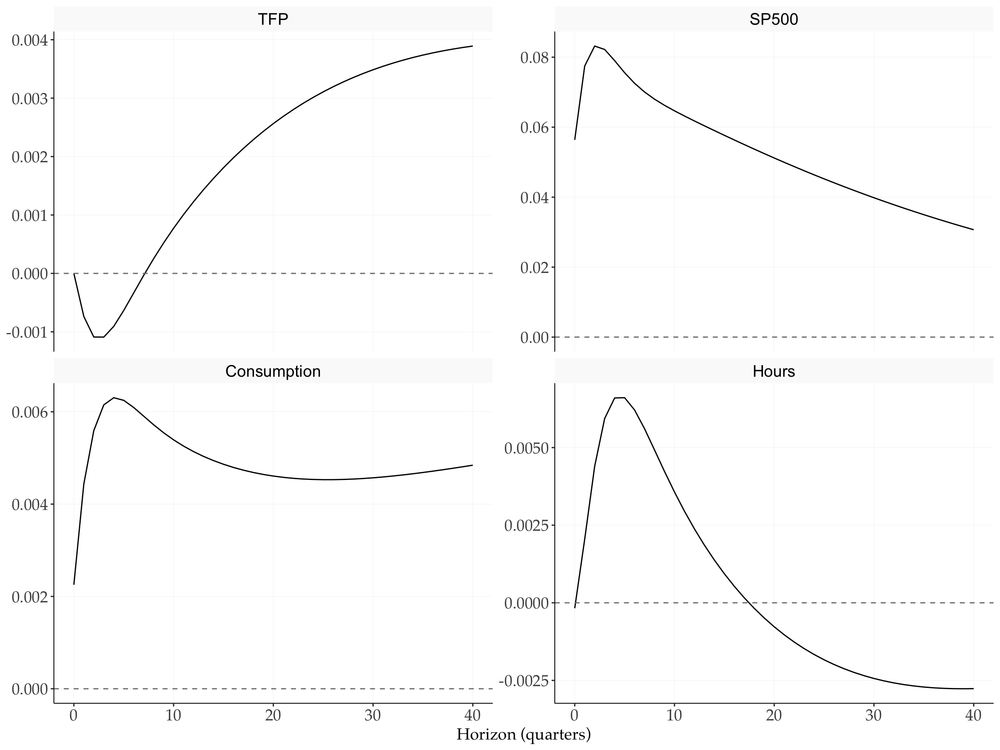
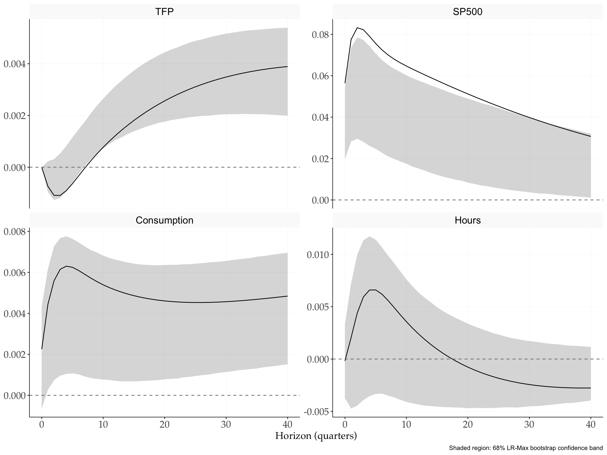
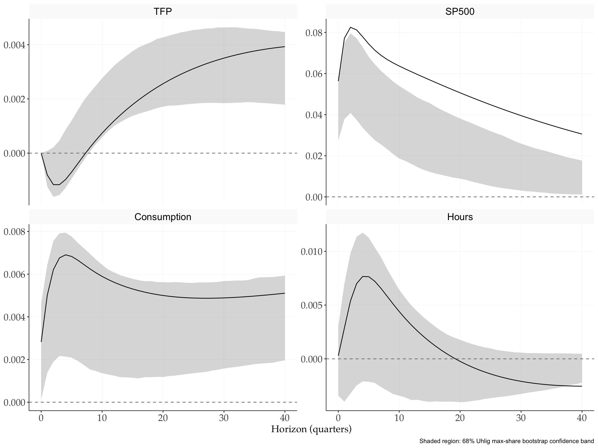

Replication: Beaudry and Portier (2014)
News-Driven Business Cycles: Insights and Challenges
2026-03-25
Source:vignettes/Replications/BeaudryPortier2014.qmd
1 Overview
This document replicates the news shock identification of (beaudryportier2014?). A news shock is identified as the shock that (i) has no contemporaneous effect on TFP and (ii) maximizes the long-run forecast error variance of TFP at a 40-quarter horizon. The approach follows the mixed restriction strategy combining a zero impact restriction with a long-run maximization criterion.
2 Setup
3 Data
4 VAR Estimation
p <- 2
c <- 1
# Estimate VAR: y_t = c + A_1 y_{t-1} + ... + A_p y_{t-p} + e_t
var_result <- fVAR(y, p = p, c = c)
# Variance-covariance matrix of reduced-form residuals
Sigma <- var_result$sigma_full5 News Shock Identification
The news shock is identified as the shock that has zero impact on TFP but maximises the cumulative long-run response of TFP over the 40-quarter horizon. Let denote the -step Wold coefficient matrices and the lower Cholesky factor of . We search for a unit vector such that the structural impact vector is:
and the long-run effect on TFP, , is maximized.
horizon <- 40
# Wold IRFs by inverting (I - A(L))
wold <- fwoldIRF(var_result, horizon = horizon)
# Lower Cholesky factor of Sigma
S <- t(chol(Sigma))
# Objective: minimise negative LR effect on variable 1 (TFP)
# subject to zero impact (first element of h2 fixed to 0)
lr_max <- function(theta, wold, S, var_idx) {
h2 <- c(0, theta / sqrt(sum(theta^2)))
lr_effect <- sum(sapply(1:dim(wold)[3], function(h) wold[var_idx, , h] %*% S %*% h2))
return(-lr_effect)
}
set.seed(12345)
h0 <- rep(1, N - 1) # N=4 variables, so 3 free parameters
result <- optim(
par = h0,
fn = lr_max,
wold = wold,
S = S,
var_idx = 1,
method = "Nelder-Mead",
control = list(reltol = 1e-10, maxit = 1e6)
)
h <- result$par
h2 <- c(0, h / sqrt(sum(h^2)))
# Structural IRFs
struct_irf <- matrix(0, nrow = N, ncol = horizon + 1)
for (hh in 1:(horizon + 1)) {
struct_irf[, hh] <- wold[,, hh] %*% S %*% h2
}6 Impulse Response Functions
varnames <- c("TFP", "SP500", "Consumption", "Hours")
irf_df <- as.data.frame(t(struct_irf))
colnames(irf_df) <- varnames
irf_df$horizon <- 0:horizon
irf_df |>
pivot_longer(-horizon, names_to = "variable", values_to = "response") |>
mutate(variable = factor(variable, levels = varnames)) |>
ggplot(aes(x = horizon, y = response)) +
geom_line() +
geom_hline(yintercept = 0, linetype = "dashed", colour = "grey50") +
facet_wrap(~variable, ncol = 2, scales = "free_y") +
labs(x = "Horizon (quarters)", y = NULL)
7 Bootstrap Confidence Bands: LR-Max Identification
varnames <- c("TFP", "SP500", "Consumption", "Hours")
irf_to_df <- function(mat, label) {
as.data.frame(t(mat)) |>
setNames(varnames) |>
mutate(horizon = 0:(ncol(mat) - 1), type = label)
}
bind_rows(
irf_to_df(struct_irf, "Point"),
irf_to_df(boot_max$upper, "Upper"),
irf_to_df(boot_max$lower, "Lower")
) |>
pivot_longer(-c(horizon, type), names_to = "variable", values_to = "response") |>
mutate(variable = factor(variable, levels = varnames)) |>
pivot_wider(names_from = type, values_from = response) |>
ggplot(aes(x = horizon)) +
geom_ribbon(aes(ymin = Lower, ymax = Upper), alpha = 0.2) +
geom_line(aes(y = Point)) +
geom_hline(yintercept = 0, linetype = "dashed", colour = "grey50") +
facet_wrap(~variable, ncol = 2, scales = "free_y") +
labs(x = "Horizon (quarters)", y = NULL,
caption = "Shaded region: 68% LR-Max bootstrap confidence band")
8 Bootstrap Confidence Bands: Uhlig Max-Share Identification
# Point estimate via Uhlig identification
h2_uhlig <- fuhlig_maxshare(wold, S, idx = 1L)
# Fix sign: last-horizon non-structural response of TFP should be positive
last_ns <- (wold[,, dim(wold)[3]] %*% S)
if (sum(last_ns[1, ] * h2_uhlig) < 0) h2_uhlig <- -h2_uhlig
struct_irf_uhlig <- matrix(0, nrow = N, ncol = horizon + 1)
for (hh in 1:(horizon + 1)) {
struct_irf_uhlig[, hh] <- wold[,, hh] %*% S %*% h2_uhlig
}
bind_rows(
irf_to_df(struct_irf_uhlig, "Point"),
irf_to_df(boot_uhlig$upper, "Upper"),
irf_to_df(boot_uhlig$lower, "Lower")
) |>
pivot_longer(-c(horizon, type), names_to = "variable", values_to = "response") |>
mutate(variable = factor(variable, levels = varnames)) |>
pivot_wider(names_from = type, values_from = response) |>
ggplot(aes(x = horizon)) +
geom_ribbon(aes(ymin = Lower, ymax = Upper), alpha = 0.2) +
geom_line(aes(y = Point)) +
geom_hline(yintercept = 0, linetype = "dashed", colour = "grey50") +
facet_wrap(~variable, ncol = 2, scales = "free_y") +
labs(x = "Horizon (quarters)", y = NULL,
caption = "Shaded region: 68% Uhlig max-share bootstrap confidence band")